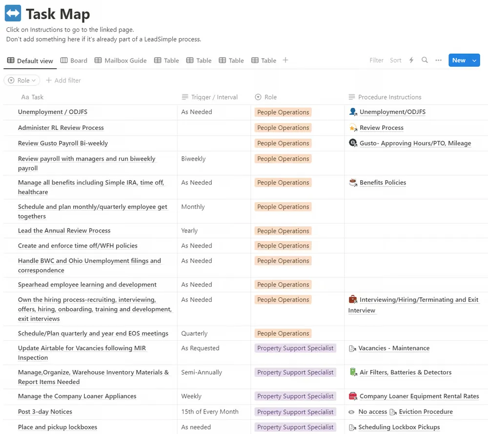
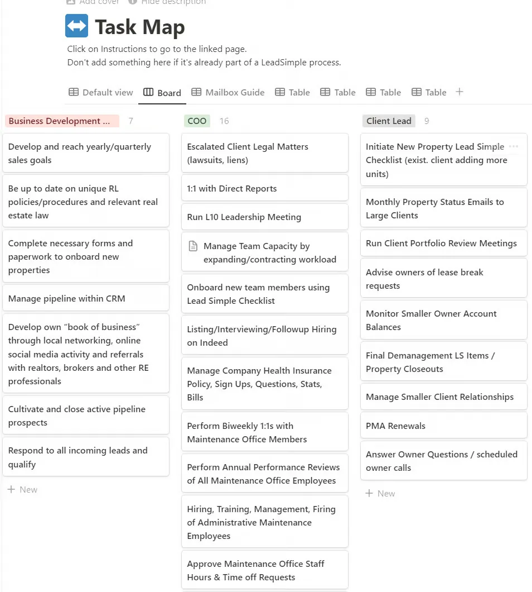

This article is part 2 of my mini-series about Notion! Here’s the list of articles:
For total beginners: Why I’m obsessed with it, and how to get started with Notion at your company.
(this article) For those with Notion experience: The #1 most important Notion page that you must have.
For those who already have a robust Notion buildout: How you can use Notion’s AI feature to drastically reduce repeat questions, save labor costs, and reduce mistakes.
Today I’d like to share what I believe is the single most valuable and important page you can add to your company Notion.
(Not yet on Notion? Sign up for Notion here. You can probably start with the free plan.)
I call it a Task Map, and here’s what it looks like:

It looks like a lot. Let me explain it with one sentence:
The task map lists every single task at your company, who does it, and links to a page with instructions on how to do it.
Our task map has 278 tasks listed. Literally every single thing that needs to happen at my company is listed there. It also shows the “Trigger” or interval, basically what tells someone that it needs to happen.
Under “Procedure Instructions”, there are links to other Notion pages with detailed instructions on how to do that specific task.
And of course, Notion lets you slice and dice this data however you want. So it’s easy to switch to a “Board/Kanban” view that breaks down the tasks by role:

If you take the time to fully document everything that needs to happen at your company, when, and who does it — you’ll unlock an insane of amount of free time for yourself (and it will also increase the value of your company immensely). Instead of being a Job Owner, you will turn into a true Business Owner.
For you my valued blog readers, I have created a sample version of this page. You can view and duplicate it for free right here, and use it to start building out your own.
Good luck and contact me with any questions that come up!
P.S. Recently, I started quietly selling our full company Notion buildout again, which includes our fully built-out task map. If after reading this issue you’re interested in jumpstarting your own property management Notion company wiki, you can buy it right here.